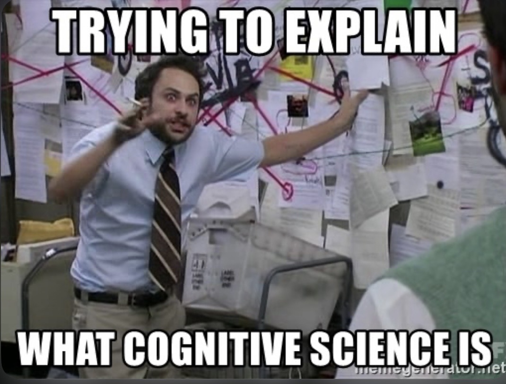

Week 2: Universal tools, I
Lecture 2.1: THE methodology

moral (from Lecture 1.2): divided we fall
Four case studies — four approaches to understanding the brain, and their limitations:
-
An ambitious broad-scope "computational" theory (ACT-R): based on a
single top-down assumption about the solution/mechanism —
not about any of the problems that arise.
-
A single-cell electrophysiology study (microstimulation): neat, but
leaves most questions unresolved.
-
An imaging study (fMRI): trying to pinpoint where in the brain
particular operations happen is not only not informative; localization
of function is a fool's hope, even if we're confident about what
the function is.
-
Throwing machine learning at problems
(Deep Learning etc.): even if the hack succeeds, it
doesn't reveal much about how the brain works, or how to scale
apps up.
What to do?
what to do? open your eyes!

[from Lecture 1.1] A real explanation of some aspect of
the mind — or of any other information-processing /
computational system — would have to be:
-
intelligently reductionist, by showing how its
complexity arises from simpler interacting elements;
-
literal (as opposed to metaphorical) at its core.
[from Lecture 1.2] A complete explanation of some aspect of
the mind would have to be:
-
exhaustive with regard to its causes, properties, and
consequences — typically on multiple levels.
Across these levels, different types of questions about the
computation at hand are identified, discussed, and
addressed. (Consider the questions from Lecture 1.2, raised /
answered by the ACT theory; by the single-neuron current-injection
study; by the whole-brain imaging study; by the machine learning
gameplaying study.)
the Marr & Poggio program: a multi-level explanatory methodology
On the agenda today:
the Mayr &
Tinbergen
& Marr
& Poggio program for understanding
cognitive/computational systems (including brains).
A typical specific question of potential interest about behavior
(more about behavior in general later this week):
why did the chicken cross the road?
why did the chicken cross the road?

Classification of explanations:
(1) cultural reference joke; (2) cultural reference joke; (3)
political satire; (4) cultural reference joke;
(5) psychoanalysis (a joke in itself); (6)
developmental neuropsychology; (7) neurophysiology; (8)
psychopharmacology.
a brief rant, to prevent an unduly exclusive focus on brains

What the public often considers to be a satisfactory explanation
of behavior:
"MY BRAIN MADE ME DO IT"
For sure, but WHY? And HOW?
(Repeat until all is fully understood.)
a key methodological observation: there are multiple levels of analysis/understanding
Just like chicken-crossing, any instance of applied computation — which is
what cognition is — can MUST be
examined on a number of LEVELS.
- Ernst Mayr's two types of causes/explanations —
- proximate causes — immediate, mechanical influences on a trait.
- ultimate causes — historical explanations of why an organism has one
trait rather than another, often in terms of natural selection.
[E. Mayr (1961). Cause and effect in biology. Science 134:1501]
- Niko Tinbergen’s four questions —
- survival value — What is it for?
- ontogeny — How did it develop during the lifetime of the individual?
- evolution — How did it evolve over the history of the species?
- causation — How does it work?
[N. Tinbergen (1963). On aims and methods in ethology. Z. Tierpsychol. 20:410]
- David Marr’s three levels of understanding —
- what problem does the system solve?
- what representations and algorithms does it employ?
- how are these implemented?
[D. Marr (1982). Vision. WH Freeman, San Francisco, CA.]
interrelationships among Marr’s three levels of analysis (from Krakauer et al., 2017)
-
A bird attempts to fly (goal) by flapping its wings
(algorithmic realization) whose aerodynamics depend on the
features of its feathers (physical implementation). Feathers
‘‘have something to do’’ with flight and flapping, but what
degree of understanding do we achieve if we dissect the
properties of the feathers alone? Bats fly but don’t have
feathers, and birds can fly without flapping.
-
The relationship [in scientific analysis] between the three
levels [shown in (A)] is not arbitrary. The first step comes
first, before the second step: the algorithmic level of
understanding is essential to interpret its mechanistic
implementation. The second step: implementation level work
feeds back to inform the algorithmic level.
-
Science suffers from an epistemological bias toward
manipulation-based [experimental] view of understanding,
induced by technology (black filled arrow).
the levels of analysis/understanding framework
Mayr & Tinbergen &
Marr & Poggio —
-
Understanding the behavioral and evolutionary context and needs, shedding
light on computational problems that may need to be solved.
- What does the animal do in general (to survive and procreate)?
- In the present context?
- What are the effects of evolutionary pressures on its
behavior?
- What are its evolutionary roots?
- Understanding the computational problem, leading to a theory.
- What could be the goal of the computation?
- What is the goal of the computation?
- Why is it appropriate?
- What is the logic behind the strategy by which it can be
carried out?
- Understanding/developing representations and algorithms that solve the problem.
- What could be the input and output representations and
the algorithm for mapping inputs to outputs?
- What are the representations and algorithms in the
given system?
- Understanding/developing the mechanism that implements the algorithm.
- How could a given representation and algorithm be
realized physically?
- How are they realized in a given system?
the hunting owl

The barn owl finds and catches mice in total darkness,
presumably
by homing in on the sound of their movement.
the barn owl: behavior in the wild

Level 0: behavior in the wild; evolution.
Tracking owls with GPS (Massa et al., 2015). Left: activity
by time of day night. Right: preferred
terrain type.
barn owl — posing the computational challenge

Level 1 (the computational problem):
what is it that needs to be done for the hunting behavior to succeed?
— find target coordinates (azimuth, elevation)
Can you think of any alternative formulations of the problem?
barn owl — a classical experimental setup for behavioral
study of sound localization

To address Levels 2 (representation and algorithm) and 3
(mechanism), controlled
experimentation is required.
The diagram on the right illustrates the behavioral testing setup.
barn owl — a classical experimental setup for behavioral study of sound localization
To address Levels 2 (representation and algorithm) and 3
(mechanism), controlled
experimentation is required.
Conducting the experiment in darkness approximates the natural
hunting conditions in the wild.
barn owl — localization performance

Here's how they found that the owl uses binaural hearing.
barn owl — from problem to algorithm and implementation

How could binaural audio information be used to localize sound source?
Note that this question straddles computation and
algorithm levels.
Remember that a particular system such as the barn owl may or may not use
a particular algorithm.
barn owl — from problem to algorithm and implementation
How could binaural audio information be used to localize sound source?
-
by noting level difference between the two ears
(interaural level difference, ILD);
-
by noting timing difference between the two ears
(interaural timing difference, ITD).
The barn owl uses both.
How?
barn owl — from problem to algorithm and implementation
(A) Barn owls can accurately localize prey based on interaural
disparities even in total darkness. If, for instance, the sound
origin is slightly to the left from the vertical and below the
horizontal midline, it will arrive at the left ear slightly
earlier (interaural time difference, ITD) and with a somewhat
larger amplitude (interaural level difference, ILD).
(B) Barn owls belong to the group of asymmetrical owls. The
asymmetry of their skull does not significantly affect ITDs,
which provide accurate information for the azimuthal
position.
(C) However, the asymmetry does affect ILDs. As a consequence,
iso-ILD-lines [contours of equal ILD] are strongly tilted and,
therefore, provide information about the vertical position of a
sound source.
[from Grothe, B. (2018).
How the Barn Owl Computes Auditory Space, Trends in Neurosciences 41(3):115]
barn owl — implementation

An elaboration of the coincidence + calibrated delay model by Masakazu Konishi —
The key idea:
convert time delay information into a place code.
Does the barn owl use this method? Yes!
barn owl — neural circuitry; Jeffress/Konishi model supported

|
|
|
anatomy: axons carrying information from the two
ears enter the nucleus laminaris from opposite sides,
and run parallel to each other.
|
physiology: neurons at the top of nucleus
laminaris show response time LEAD to the ipsilateral ear,
changing to LAG as the recording electrode descends into NL.
|
the Jeffress model: 50 years later
(A) The original Jeffress (1948) delay line +
coincidence model.
(B) Delay line configuration of a bushy cell
axon (red) from the contralateral AVCN (Anterior Ventral Cochlear Nucleus) projecting
to the MSO (Medial Superior Olive; black).
(C) Jeffress model, current view. Monaural channels feed into a binaural
processor: a bank of cross-correlators
that tap the signal at a different
ITD. Cells for which the delay exactly
offsets the ITD are maximally active.
An update on the algorithmic level:
B. J. Fischer and J. L. Peña (2011). Owl's behavior and neural representation predicted by Bayesian inference.
Nature Neuroscience 14:1061-1067.
Probabilistic/Bayesian computation will be discussed in lecture 3.1.
evolutionary origins of sound localization in BIRDS and in MAMMALS (from Grothe, 2003)
The evolution of tympanic ears
(tympanum and middle ear), a prerequisite for
localizing airborne sound, occurred independently and almost
simultaneously in several clades of tetrapods. During the
Triassic period, tympanic ears evolved in frogs (Anura), several
lines of ‘reptiles’, including those leading to archosaurs and
later from archosaurs to birds, and in early mammals.
There is no common ancestor of birds and mammals that had the
anatomical substrate for localizing airborne sounds by means of
interaural comparison. The neural system for interaural time
difference processing evolved independently during parallel
evolution in birds and mammals. Numbers show millions of
years ago.
using ITD for sound localization (from Grothe, 2003)
The interaural time difference (ITD) is the main cue for
localizing low-frequency sounds. If a sound source is straight
ahead, the ITD is zero. If a sound source comes from one side,
the sound will reach the ear on that side first, creating an
ITD. Depending on the head size (the distance between the
ears), ITDs are not greater than 100 μs for the gerbil, but can
be up to several hundred microseconds for larger
animals.
Low-frequency hearing mammals, such as the
Mongolian gerbil, evolved ITD detection to avoid
predators such as the
eagle owl.
[EXTRA] different strategies for encoding ITDs (from Grothe, 2003)
- In birds:
-
(a) The bird ITD-encoding structure, the nucleus
laminaris, operates in a way that is similar to the
model suggested by Jeffress in 1948. Arrays of
coincidence detector neurons (coloured circles) on both
sides of the brainstem receive excitatory inputs (red
lines) from the two ears (only inputs to the left
nucleus laminaris are shown). Depending on the axonal
length (delay line) of the two inputs, each coincidence
detector neuron responds maximally to a particular ITD,
which compensates for differences in the internal neural
delays. A systematic arrangement of the delay lines from
the contralateral ear creates a map of horizontal
auditory space.
-
(b) The maxima of the ITD functions of
different neurons in one nucleus laminaris distribute
across the physiologically relevant range (shaded
area). The width of ITD functions depends on the
stimulus frequency and, for lower frequencies, might
be broader than shown.
-
In mammals:
-
(c) The mammalian ITD encoder is the medial superior
olive (MSO; coloured circles). MSO neurons that are
tuned to the same frequency preferentially respond to
the same ITD. The ITD functions are adjusted to bring
the maximal slope close to zero. The opposite MSO is
adjusted like a mirror image. Therefore, the relative
activity of the entire population of MSO cells, rather
than the distribution within an MSO, represents the
horizontal position of a sound in space. The ITD tuning
is achieved by a complex interaction of binaural
excitatory and inhibitory inputs.
-
(d) ITD functions of MSO neurons are
adjusted so that the maximal slope preferentially
occurs close to zero ITD. For a given frequency, the
ITD tuning of the population of MSO neurons in the
left MSO mirrors that of the corresponding population
of cells in the right MSO.
[EXTRA] sound localization CIRCUITS in birds and in mammals (from Grothe, 2003)
(a) The mammalian ITD encoder is the medial superior olive
(MSO), an auditory brainstem structure (inset).
(b) The avian counterpart of the MSO is the nucleus
laminaris (NL, here shown for the chick).
summary of the barn owl case study — integrated understanding
The multiple levels of analysis, applied to sound
localization by the owl:
-
The evolutionary and behavioral context:
In the ecological niche they reside in, owls employ passive sound
localization to pinpoint prey, by using interaural time (and
intensity) differences.
-
The computational problem:
Given timing (and intensity) differences measured at two locations,
pinpoint the source of the sound.
-
Representation and algorithm:
Use coincidence detection and delay lines to transform time difference
into a place code in the brain.
-
The mechanism:
Arrange the neurons and wire them up via delay lines to reflect the algorithmic
solution.
The bottom line: a complete understanding of the system in question.
levels of understanding and multiple realizability of computation

armed with the proper methodology, we can move on
What next?
-
A closer look at the concept of behavior.
-
Universal tools, I: measurement; representation.
-
Universal tools, II: probability; the ace of Bayes.
-
Universal tools, III: learning; similarity, generalization.
-
Universal tools, IV: dimensionality; complexity; memory.
-
Actions and consequences: decision making; reinforcement learning; problem solving.
-
Higher cognition; sequential behaviors and language.
-
Neural computation I, II, III; brains.
-
Advanced topics.